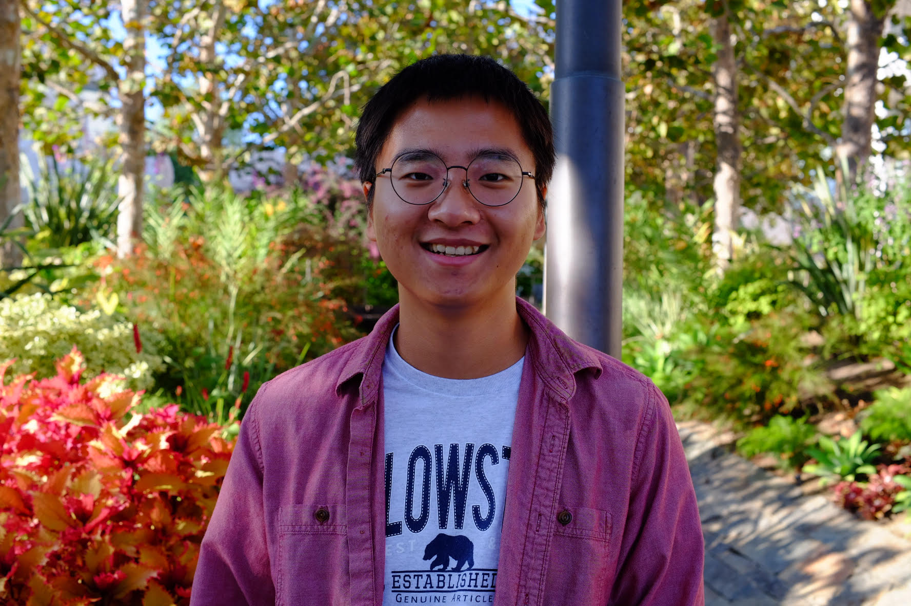
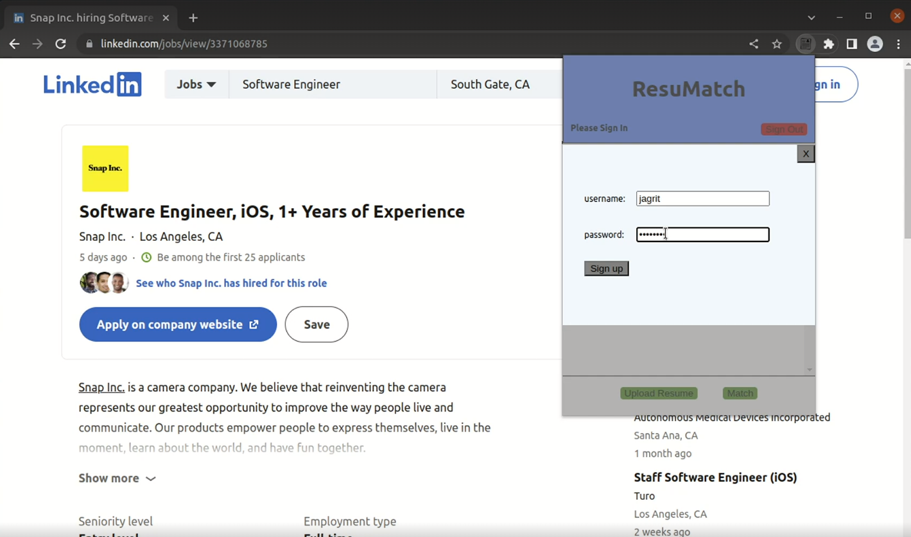
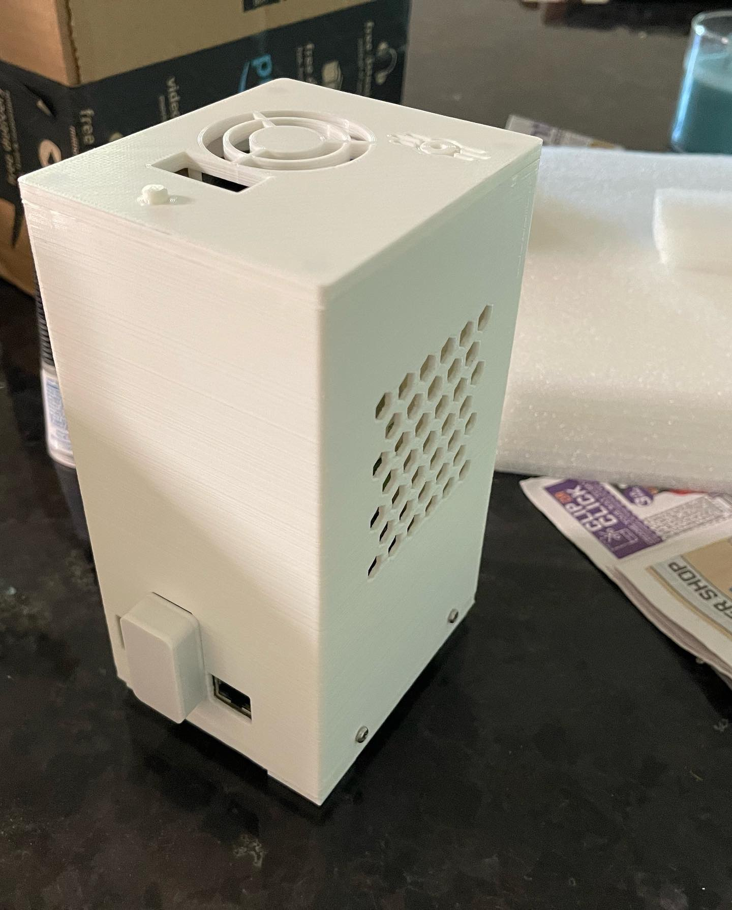

TAed Introduction to Computer Network Fundamentals, supporting students on networking concepts, protocol behavior, programming assignments, and debugging workflows.
UCLA Computer Science M.S. graduate
Xuanzhe "Mike" Han
I build software across systems, web, and machine learning: from ROS pipelines and TypeScript dashboards to OpenMLS group encryption, decentralized collaboration tools, and on-device model deployment.

About
Engineer focused on dependable tools and clear systems.
I recently completed my M.S. in Computer Science at the University of California, Los Angeles, after earning my B.S. in Computer Science at UCLA in 2024. My recent work sits between production engineering and research: data pipelines, developer-facing tools, web dashboards, secure distributed systems, and applied machine learning.
I like projects where the interface and the underlying system both matter. That has led me from React and Flask analytics products to ROS and C++ vehicle data tooling, Rust/WASM security experiments, network fundamentals teaching, and edge-device LLM benchmarking.
Languages
C++, Python, TypeScript, JavaScript, Go, Rust, SQL, Bash
Systems
Linux, ROS, FastAPI, Docker, Git, NDN, OpenMLS, WebRTC, CUDA, Kafka
ML and Web
PyTorch, Hugging Face, scikit-learn, React, Flask, Node, REST APIs
Experience
Recent Work
Built a ROS and C++ pipeline for aligning multi-sensor vehicle logs and generating model-ready routing features. I also contributed FastAPI and TypeScript indexing and query logic for an internal dataset dashboard used by researchers.
Developed a React and Flask analytics dashboard with interactive filtering and drill-down views. Integrated Twilio SendGrid event data so campaign owners could inspect delivery, open, click, bounce, and unsubscribe metrics.
Worked on facial action unit detection experiments, preparing reproducible PyTorch and scikit-learn workflows over BP4D and DISFA datasets and documenting model/data processing steps for the research team.
Projects
Selected Builds
Capstone, secure collaboration
Ownly Group Encryption
Completed capstone work for Ownly, a decentralized workspace built on Named Data Networking. I focused on applying OpenMLS group encryption across the Rust/WASM cryptography layer and TypeScript/Go control-plane code for message flow, persistence, and recovery.
Read capstone reportDistributed editing
DecentraDocs
Peer-to-peer collaborative editor using Yjs CRDTs over PeerJS/WebRTC with Dex-backed OpenID Connect identity. The project focused on keeping document state available without a central document server.
Edge ML
On-Device LLM Deployment
Benchmarked llama.cpp model deployment on mobile/edge hardware with ADB automation, throughput measurement, and power profiling to compare latency and efficiency tradeoffs.

Browser extension
ResuMatch
Chrome extension that compares job requirements with resume content and surfaces matched skills, role keywords, and fit signals while a user reviews job postings.
RepositorySystems experiments
Performance Projects
Built and evaluated focused systems projects including CUDA RNN acceleration, dynamic Kafka batching, FastAPI cache strategy benchmarks, and in-network random forest inference mapping for programmable switches.

Hardware
Raspberry Pi NAS
Designed and assembled a Raspberry Pi NAS with a custom 3D-printed enclosure, magnetic panels, a SATA hat, and an external temperature-controlled fan module.
Outside Work
A builder away from the keyboard too.
3D printing and keyboards
I have led project teams in 3D4E at UCLA, taught PCB and MicroPython basics, and built macropads from hand-soldered prototypes through custom PCB versions.
International background
I grew up in Nanjing, moved to the United States for school at 14, and have spent a lot of time learning how to work across different communities and expectations.
Small rituals
I read fiction, watch movies, and make coffee with too many gadgets. Those hobbies keep me patient with details and curious about how people experience the tools around them.